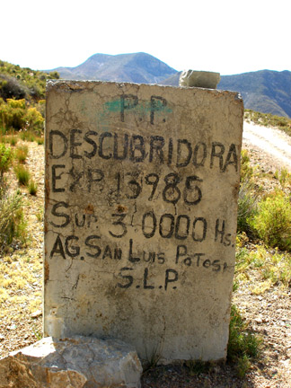
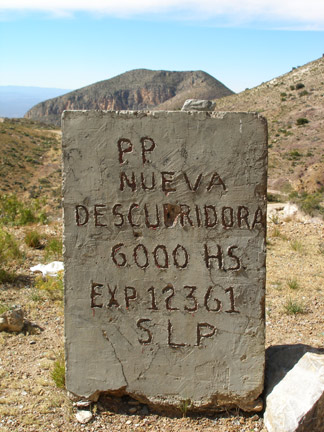
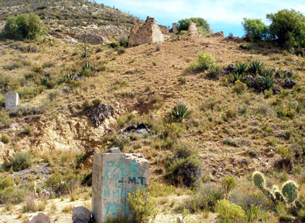
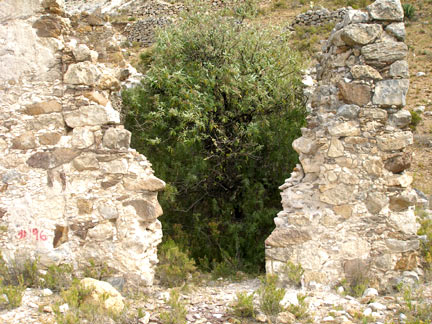
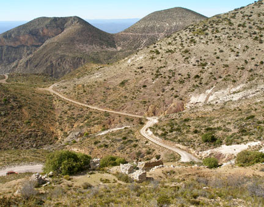
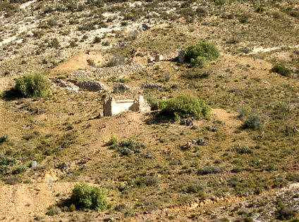

|
THIS IS AN ARCHIVED SITE - ESTE ES UN SITIO ARCHIVADO |
|
Please visit
https://www.realde14.com for the current
site |
|
Visite
https://www.realde14.com para ver el sitio actual |
| Home |
Town |
Area |
History |
Links |
1774
The first vein of silver was discovered by Sebastián
Coronado and Antonio Lamas while
they were exploring the sierra. (IPIÑA,
p 14)
1777
On the 26th of August,
Sebastián Coronado registered the mine as “La
Descubridora”. (WALLACE,
p 113).
1779 Coronado
registered "La Descubridora" in Charcas on the 11th of
August. (MONTEJANO ,
p 16).
Berlandier, Vol.1, p.
216 puts the discovery date in 1773 and tells the story of
how a cowboy who had lost his horse was caught by a cold night and
obliged to make a fire. In the morning he was surprised to find
melted silver, which had run from his hearth. (This story is also told
by Ward, II, p. 506, who
mistakenly gives the date of the discovery as 1778.) The
vein was then worked by Sebastián
Coronado who Berlandier describes as "a poor private citizen who was
not very rich and worked irregularly".
In a short time
other mines in the Veta Grande, like Padre Flores and Gaudalupe, as
well as
mines in the Veta Madre and Veta Refugio were in operation.
La Descubridora was
located on the western flank of Cerro la Descubridora, about 2 km. NW
of the center of Real de Catorce at an elevation of 2700 meters (See Map). Its
ruins lie just above the road to La Bufa and Agua Blanca, 1.9 km. from
the Panteon (cemetary) entrance. Little is left showing of the
operation except a
few collapsed walls and at least four filled entrances.
|  |
 |
| Looking
toward the south over the Descubridora claim marker which indicates a
claim area of 30,000 hectares. Cerro Quemado is seen in the distance. |
View
to the west with La Bufa behind the nearby marker for the Nueva
Descubridora claim. Area 6000 hectares. |
| Many claim markers
similar to these are scattered over the hills of the Sierra Catorce.
Some, like these, are quite legible and appear to be maintained. Others
are in various states of decay; some are only piles of loose rock. |
|
The mine ruins are spread over the side of the mountain above the claim markers. The cut in the hill behind the marker in the foreground was a lower entrance to the mine. |
 |
|  |
Inside the ruins
there was a vertical shaft which would have been used for access to
lower levels. This hole is now collasped and closed just a few feet
down. A tree has grown out of the rubble.
|
View to the west
from above the La Descubridora Mine with La Bufa in the background. The
ruins in the lower part of the picture are about all that is left of
the original silver mine operation.
|
 |
|  |
View of the mine
from a hill to the west. The mine was developed on at least three
levels. The horizontal entrance is at the bottom left, the ruins in the
middle conceal the shaft entrance, and more diggings are visible above
the ruined structures.
|